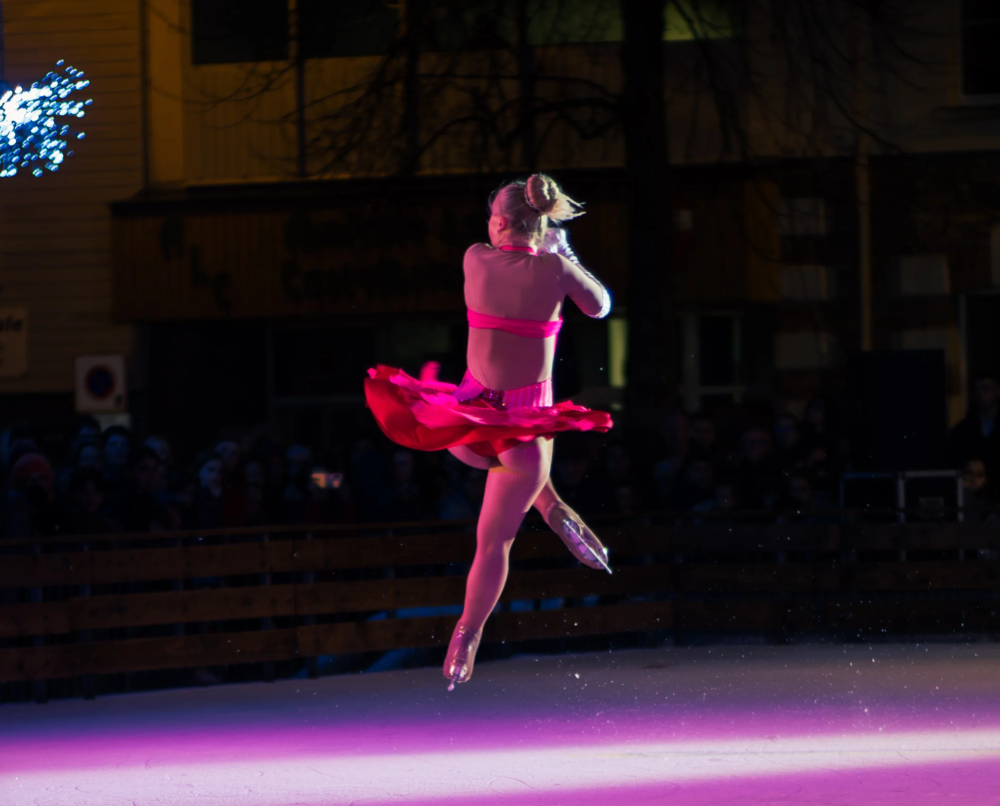

Ice Show by Delice Show
Walibi, Belgique 1 min
Tournée France 2025 1 min
À propos du projet
Deux missions distinctes pour Delice Show : une captation du spectacle sur glace au parc Walibi en Belgique, et un aftermovie de leur tournée hivernale en France. Dans les deux cas, l'objectif est le même : donner à la compagnie une vidéo qui leur permette de proposer leur show à de nouvelles villes, de nouveaux parcs, de nouvelles structures. Une captation événementielle pensée comme outil commercial.
Équipe Technique
Deux missions, un même client, une même logique
Delice Show est une compagnie de spectacles sur glace. Leur show Ice Show réunit une troupe de patineuses et patineurs qui se produisent sur des patinoires en milieu extérieur ou en salle, devant un public familial. Le spectacle tourne pendant les périodes hivernales, dans des villes et villages à travers la France. Il accueille beaucoup de monde à chaque représentation.
HUMAN REC est intervenu sur deux missions distinctes : une captation du spectacle au parc Walibi en Belgique, indépendante de la tournée, puis l'aftermovie de la tournée hivernale France 2025 sur deux dates (Châteaubriant et Libourne). Dans les deux cas, l'objectif était de produire une vidéo que Delice Show puisse utiliser pour proposer leur spectacle à de nouvelles structures : villes, parcs, organisateurs d'événements.
Solo, 2 caméras, 6 shows vus depuis 6 positions différentes
Pour Walibi, j'étais seul sur le tournage avec deux caméras. Une caméra sur trépied pour les plans larges et stables, une caméra portée pour aller chercher les mouvements, sublimer les acrobaties, coller à l'énergie du show. Pas de stabilisateur, mais des plans qui restent lisibles. L'idée est de toujours voir les corps en entier : les pieds qui patinent et le reste du corps dans le même cadre. Des plans plus serrés sur les expressions ou les gestes ponctuellement, mais c'est rare.
Le show se répète 6 fois. J'ai assisté aux 6 représentations depuis 6 positions différentes sur le site, pour couvrir suffisamment d'angles et varier les points de vue dans le montage. L'ambiance est sombre, ce qui impose des optiques à grande ouverture pour ne pas subir le bruit numérique, et des zooms pour aller chercher des détails sur les patineuses depuis des positions éloignées. Du ralenti a été utilisé sur certaines séquences. J'ai été transporté et logé avec l'équipe sur les 2 jours de tournage, le troisième jour je suis reparti.
Une semaine sur la route, 2 dates, logé avec l'équipe
Pour la tournée, j'ai suivi la compagnie sur une petite semaine à travers la France, sur deux dates : Châteaubriant et Libourne. Logé avec l'équipe pendant toute la durée du déplacement. Ce n'est pas un détail logistique : cette immersion totale est un choix. Quand on filme des personnes qui ne sont pas habituées au regard de la caméra, il y a presque toujours une gêne, une crispation, quelque chose qui sonne faux. Partager les repas, les trajets, les coulisses au quotidien crée un lien différent. Les patineurs et patineuses ont fini par ignorer la caméra, ou mieux : par jouer avec. Sur les shows, ça se ressent : ils peuvent lancer un regard à la caméra sans paniquer, se laisser filmer sans se fermer. Sur les backstages, on obtient du vrai.
Ce contenu backstage est livré à part à Delice Show pour promouvoir leur compagnie et recruter de nouveaux patineurs et patineuses pour leurs prochaines éditions. La contrainte sur la tournée : beaucoup de monde dans des espaces serrés, il ne faut pas gêner le visuel du public. Les angles disponibles sont donc plus restreints qu'à Walibi, et il faut être précis dans les déplacements.
Un aftermovie rythmé, des capsules réseaux, un traitement qualité TOPAZ
Le film principal est monté de façon à raconter rapidement le spectacle : les meilleurs moments, dans un ordre qui tient une narration courte, avec un rythme calé sur la musique. L'objectif est que quelqu'un qui regarde la vidéo ait immédiatement envie de voir ce show chez lui, dans sa ville, dans son parc.
Des déclinaisons courtes en format vertical ont été produites pour les réseaux sociaux : des capsules de 30 secondes, certaines avec un moment fort du show monté sur une montée musicale. Ces capsules passent par le logiciel TOPAZ pour limiter la compression et maintenir une bonne qualité d'image après l'export réseaux.
Un outil commercial pour la compagnie, livré en 4K et HD
Livrables : aftermovie principal au format 16/9 en 4K et HD, capsules verticales pour les réseaux sociaux, contenu backstage livré à part. Les films sont utilisés par Delice Show pour leurs démarches commerciales auprès des structures susceptibles de les accueillir.
Pour ce type de captation événementielle, le budget dépend du nombre de jours de captation, des contraintes de déplacement et du volume de montages demandés. Devis sur mesure selon votre événement.
Un spectacle à capter ? Tournée, show sur scène, événement familial : donnez-lui une vidéo qui serve à quelque chose derrière. Parlons-en.


Vous souhaitez un film similaire ?
Dites-nous ce que vous voulez construire. On vous dit comment on peut le faire.
Parlons-en